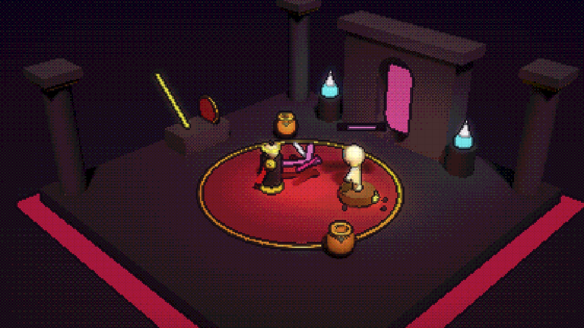
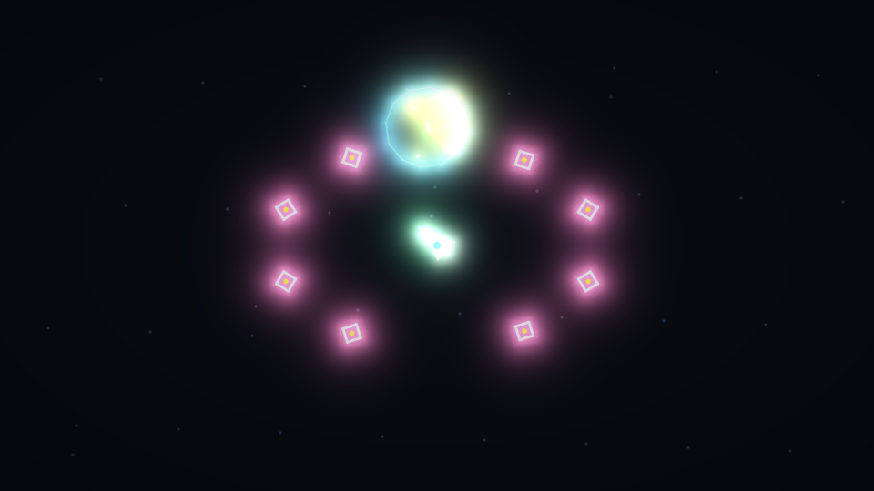

How TurtleFX Code Looks
TurtleFX Logo is built to be fast to type. There are no semicolons at the end of lines,
and capitalization does not matter — FD 50 and fd 50 mean the exact same thing.
Comments (Notes for Humans)
Anything after ; or // on a line is ignored by the computer. Use them to leave yourself reminders:
; Classic Logo comment style
// Modern comment style (works too!)
; You can write one command per line:
fd 50
rt 90
; OR chain multiple turtle commands on one line!
pu fd 20 rt 90 pd fd 50The 5 Kinds of Values You Can Write
| Kind | Examples | Where You Use It |
|---|---|---|
| Numbers | 10, 3.14, -5, 100% | Distances, angles, speeds, timers. (0 counts as false; any other number counts as true.) |
| Colors | #f0a, #38bdf8, #ff004d88 | 3-digit (#RGB), 6-digit (#RRGGBB), or 8-digit with transparency (#RRGGBBAA). |
| Text Strings | "left", "space", """...""" | Single-line quotes for key names & file paths, or triple-quoted """...""" multiline strings for writing inline GLSL shaders! |
| Lists & 3D Points | [1, 1, 1, 1], [0, 5, 10] | Hold up to 64 numbers in one variable, or 3D positions [x, y, z]. |
| Option Words | pico8, gameboy, add, 2d, 3d | Plain words without quotes for modes, palettes, and effects (e.g. palette pico8). |
3 Tiny Spacing Rules to Remember
Because TurtleFX uses [ ] for both lists and code blocks, spacing makes your intent crystal clear:
- List item vs. Code block: Glue
[right onto a list name (hp[0]). Put a space before[for code blocks (if alive [ fd 10 ]). - Negative coordinates: Glue
-to a negative number when listing coordinates:at 0 -4 [ dot 2 ]meansx = 0, y = -4. Put spaces around-when subtracting:x - 4. - Parentheses: Glue
(to a command name for function-style calls:box(2, 3, 1). Put a space before(to group math:at (10 + k * 5) 172 [ dot 2 ].
Variables & Lists
A variable is a labeled box that remembers a value — like your ship's position, score, or speed.
Create one with let, and change it with =, +=, -=, *=, or /=.
let ship_x = 160
let score = 0
let speed = 120
; Shortcuts to update variables:
ship_x += speed * dt ; add to ship_x
ship_x -= 10 ; subtract 10
speed *= 1.5 ; multiply by 1.5
speed /= 2 ; divide by 2
score = 100 ; replace completelyLists (Remembering Lots of Things at Once)
Need 6 enemies or 3 lasers on screen at the same time? Store them in a list!
List positions always start counting at 0 (so the first item is [0], the second is [1], etc.).
; 1 = enemy is alive, 0 = enemy is destroyed
let enemy_alive = [1, 1, 1, 1, 1, 1]
let enemy_hp = [3, 3, 3, 3, 3, 3]
; Read an item:
if enemy_alive[0] == 1 [
; Damage enemy #0 by 1
enemy_hp[0] -= 1
if enemy_hp[0] <= 0 [
enemy_alive[0] = 0
]
]Global vs. Local Variables + Built-In Variables
Global (Top of File)
A let written outside on frame or to ... end is remembered forever across frames — perfect for player position, score, and enemy lists.
Local (Temporary)
A let inside a to command or loop counter (repeat 6 with i) only exists inside that block and disappears when it ends.
| Built-in Variable | What It Gives You Automatically |
|---|---|
time | Seconds since the script started (great for smooth motion like sin(time)). |
dt | Time since the last frame (~0.016 at 60 FPS). Multiply speeds by dt so movement stays smooth on every PC! |
width / height | Canvas width and height (e.g. 320 and 180 in Retro mode). |
pi | 3.14159... (handy for circle and polygon math). |
true / on & false / off | Shortcuts for 1 and 0. |
Operators, Built-In Functions & Keyboard/Mouse
Math & Logic Operators
Order of operations works just like math class (parentheses first, then multiply/divide, then add/subtract, then comparisons, then and / or):
| Operators | Meaning | Example |
|---|---|---|
+ - * / | Add, subtract, multiply, divide (dividing by 0 safely returns 0) | ship_x + 120 * dt |
% | Remainder / wrap-around (even negative numbers wrap cleanly!) | (time * 40) % 180 |
== != < <= > >= | Equal, not equal, less/greater than | if kills >= 6 [ ... ] |
and or not / ! | Combine or flip true/false checks | if key("space") and cd <= 0 [ ... ] |
; You can pass arguments by position OR label them by name so code is super readable:
cylinder(4.2, 0.9)
cylinder(radius: 4.2, height: 0.9)
; Same for effects and camera:
fx crt(scanlines: 0.35, curve: 0.10)
camera(pos: [0, 4, 12], look: [0, 1.5, 0], fov: 48)Every Built-In Function
| Category | Functions | What They Do |
|---|---|---|
| Waves & Angles | sin(x) cos(x) tan(x)dsin(deg) dcos(deg)rad(deg) deg(rad) |
sin/cos take radians (awesome for sin(time * 3) wobbles). dsin/dcos take degrees (awesome for steering at angle degrees!). rad/deg convert between them. |
| Numbers | abs(x) sqrt(x) pow(a, b)floor(x) ceil(x) fract(x) |
abs = distance without minus sign; sqrt = square root; pow = exponent; floor/ceil = round down/up; fract = decimal part only. |
| Game Helpers | min(a, b) max(a, b)clamp(x, lo, hi)lerp(a, b, t) / mix(a, b, t)rand() |
clamp keeps a ship inside screen walls; lerp/mix blends smoothly from a to b; rand() returns a random decimal from 0.0 to 1.0. |
| Colors | hsl(hue, sat, light)rgb(r, g, b) |
hsl picks rainbow colors using a 0–360° color wheel (sat & light work as 0..1 or 0..100%). rgb takes 0..1 or 0..255. |
| Controls | key("name")key_pressed("name")mouse_x() mouse_y() |
key is true while held down; key_pressed fires once on tap. Supported names: "left"/"a", "right"/"d", "up"/"w", "down"/"s", "space", "enter", "shift", "a"–"z", "0"–"9". |
; Keep ship_x safely between 16 and 304
if key("left") [ ship_x -= 120 * dt ]
if key("right") [ ship_x += 120 * dt ]
ship_x = clamp(ship_x, 16, 304)
; Smoothly cycle rainbow color over time
color hsl((time * 80) % 360, 100%, 60%)
; Draw a glowing dot wherever the mouse is (in 2D centered coords)
let mx = mouse_x() - width * 0.5
let my = height * 0.5 - mouse_y()
at mx my [ dot 8 + sin(time * 6) * 3 ]Decisions, Loops & Teaching the Turtle New Tricks
Making Decisions: if and else
if hp <= 0 [
color #ff004d ; red when knocked out
] else [
color #2ee68a ; green when healthy
]Repeating Things: repeat, repeat ... with i, and while
; 1. Simple repeat: draw a square
repeat 4 [
fd 50
rt 90
]
; 2. Repeat with a counter (i goes 0, 1, 2, 3, 4, 5):
repeat 6 with i [
at (48 + i * 44) 40 [ dot 6 ]
]
; 3. While loop: keep going as long as a rule is true
let r = 10
while r < 80 [
dot r
r += 20
]Teaching New Commands: to ... end & stop
Wrap any pattern inside to name(inputs) ... end to invent your own Logo command!
A command can even call itself (recursion) to grow fractals and trees — just add an if ... [ stop ] (or return) so it knows when to stop!
to fern(len, depth)
if depth == 0 [ stop ] ; base case: stop recursing!
color hsl(120 + depth * 15, 90%, 55%)
fd len
branch [ lt 28 fern(len * 0.72, depth - 1) ]
branch [ rt 28 fern(len * 0.72, depth - 1) ]
end
; Call your new command:
at 0 -140 [ fern(70, 6) ]Setup (Runs Once) vs. on frame(dt) (60 FPS)
Every TurtleFX game has two parts:
- Top of your file (Setup): Runs once when you launch or save the file. Put your
mode,fx, startingletvariables, andto ... endcommands here. on frame(dt) ... end(The Game Loop): Runs 60 times every second! Each frame starts with a fresh turtle at the center, while all your top-levelletvariables keep their updated values.
; === 1. SETUP (runs once) ===
mode 2d
fx bloom(strength: 0.6)
let bx = 0
let by = 0
let vx = 210
let vy = 150
; === 2. GAME LOOP (runs 60x per second) ===
on frame(dt)
clear #0e0e11
; Move ball and bounce off invisible walls
bx += vx * dt
by += vy * dt
if abs(bx) > 280 [ vx = -vx ]
if abs(by) > 160 [ vy = -vy ]
; Draw glowing ball
color #2ee68a
glow 0.8
at bx by [ dot 14 ]
endHow to Control the Turtle in 2D & Retro
Imagine a tiny robot holding a glowing marker. You tell it how far to walk and which way to turn — and every turn happens from the turtle's own point of view.
Every 2D / Retro Turtle Command
| Command (Alias) | What It Does |
|---|---|
fd 50 (forward) / bk 50 (back) | Walk forward or backward. Draws a glowing line when the pen is down. |
rt 90 (right) / lt 90 (left) | Turn clockwise or counter-clockwise by degrees. |
pu (penup) / pd (pendown) | Lift the pen to move silently, or put it back down to draw. |
home | Snap the turtle back to (0, 0) facing straight up (0°). |
dot 8 / circle 8 | Stamp a filled circle of radius 8 right under the turtle. |
rect 20 10 | Stamp a 20×10 rectangle rotated to match the turtle's angle. |
fill [ ... ] | Trace any outline with fd/bk — TurtleFX fills it solid (even stars & notched spaceships!). |
color #hex / pen_width 3 (pw) | Change ink color and stroke thickness. |
glow 0.7 / blend add (or alpha) | Add neon aura; blend add makes overlapping strokes glow brighter like lasers. |
Example A: Lifting the Pen (pu / pd) to Center a Shape
to polygon(sides, radius)
; Walk out to the edge with pen UP, then align along the first side
pu fd radius rt 90 + (180 / sides) pd
let edge = 2 * radius * sin(pi / sides)
repeat sides [
fd edge
rt 360 / sides
]
end
; Dashed line: alternate pen down and pen up
repeat 6 [
pd fd 12
pu fd 8
]
pdExample B: Never Lose Your Place with branch, at, and offset
These three scoped blocks save the turtle's position, angle, and color on entry — and snap everything back when the ] closes:
branch [ ... ](orsave [ ... ]): Stay right where you are, draw a side-detail, then snap back automatically.at x y [ ... ]: Teleport to exact world coordinates(x, y)facing0°, draw, then return.offset dx dy [ ... ]: Shift slightly relative to where the turtle is right now (awesome for ship cockpits and thrusters!).
to draw_ship()
; Concave fighter hull filled automatically!
color #fff1e8
branch [
pu fd 10 pd
fill [
rt 150 fd 18
rt 110 fd 6
lt 50 fd 4 ; rear engine notch
rt 100 fd 4
lt 50 fd 6
rt 110 fd 18
]
]
; Because branch restored us, we are STILL at the ship's center!
color #29adff
offset 0 1 [ dot 2.0 ] ; cockpit
color #ffa300
offset 0 -7 [ rt 180 fd 6 ] ; thruster flame
end
; Place the ship anywhere on screen:
at ship_x ship_y [ draw_ship() ]Example C: Drive the Turtle Like an Asteroids Ship!
mode 2d
fx bloom(strength: 0.5)
let px = 0
let py = 0
let angle = 0
on frame(dt)
clear #0e0e11
; Turn with Left/Right, thrust forward with Up
if key("left") [ angle -= 200 * dt ]
if key("right") [ angle += 200 * dt ]
if key("up") [
px += dsin(angle) * 180 * dt
py += dcos(angle) * 180 * dt
]
at px py [
rt angle
color #2ee68a
glow 0.7
fill [
pu fd 16 pd
rt 150 fd 28
rt 120 fd 14
rt 120 fd 28
]
]
endHow to Control the Turtle in 3D
In mode 3d, imagine sitting inside a jet plane. You move forward with fd and steer with three airplane turns:
pitch (nose up/down), yaw (steer left/right), and roll (barrel roll).
All 6 3D Shapes, Materials & Sculpting Tools
| Command | What It Builds |
|---|---|
sphere(radius) | A ball centered at the turtle. |
box(w, h, d) | A 3D box (width, height, depth) rotated with the turtle. |
capsule(length, radius) | A rounded cylinder shooting forward along the turtle's nose (perfect for tree trunks & limbs!). |
cylinder(radius, height) | A flat-topped cylinder standing along the turtle's up axis. |
cone(radius, height) | A pointed cone (use roll 180 to flip it upside down for a floating island!). |
torus(major, minor) | A 3D donut / halo ring. |
material matte(#col) | Soft clay / plaster look with no shiny highlight. |
material glossy(#col, rough: 0.25) | Shiny plastic / metal highlight (lower rough = shinier). |
material emissive(#col, strength: 2.0) | Self-lit glowing crystal or torch (triggers fx bloom AND casts real 3D bounce light onto nearby surfaces!). |
material stone(#col, rough: 0.7) | Procedural 3D weathered rock with cracks, grain, and micro-bump — ideal for dungeon walls and arches. |
material tiles(#col, size: 1.5) | Staggered gothic flagstone floor tiles with mortar seams and per-tile variation. |
sprite(src, size: 2.0, ...) | Draws a .png sprite sheet (cols, rows, frame, flip_x, tint) OR inline """...""" pixel art — works in 2D/Retro AND as a depth-tested 2.5D billboard in 3D! (Alias: billboard) |
model("prop.obj", scale: 1.0) | Loads & renders native .obj, .glb, or .gltf 3D meshes via raylib, automatically lit & depth-composited with your 3D SDF world (optional wireframe: on, tint: #hex). |
smooth k [ ... ] | Melts every shape inside together smoothly like soft clay (bigger k = meltier). |
carve [ ... ] | Punches a clean hole out of earlier shapes — great for doorways, windows, and tunnels! |
camera(pos: [...], look: [...], fov: 48) | Places your eye in 3D space and aims it at look. |
light sun(dir: [...], color: #hex, shadows: soft) | Sets sun direction, tint, and soft raymarched shadows (or shadows: off). |
sky #hex or sky gradient(#top, #bot) | Sets the 3D background sky color or vertical gradient. |
mode 3d
sky gradient(#0b1120, #312e81)
light sun(dir: [-1, -2, -1], color: #ffe8cc, shadows: soft)
fx bloom(strength: 0.55)
to tree(len, radius, depth)
if depth == 0 [
material emissive(#38bdf8, strength: 2.2)
sphere(radius * 2.4) ; glowing crystal leaf!
stop
]
material matte(#6b4423)
capsule(len, radius) ; draw branch forward
fd len ; fly to the tip
; Roll 120 deg around the branch, then pitch out 28 deg
branch [ roll 15 pitch 28 tree(len * 0.72, radius * 0.72, depth - 1) ]
branch [ roll 135 pitch 30 tree(len * 0.70, radius * 0.72, depth - 1) ]
branch [ roll 255 pitch 26 tree(len * 0.68, radius * 0.72, depth - 1) ]
end
on frame(dt)
; Orbit the camera slowly in a circle
camera(pos: [sin(time * 0.4) * 11, 3.3, cos(time * 0.4) * 11], look: [0, 1.5, 0])
; Clay-blended floating island
smooth 0.55 [
material matte(#4d7c0f)
at 0 0 0 [ cylinder(radius: 4.2, height: 0.9) ]
material matte(#645e59)
at 0 -1.9 0 [ roll 180 cone(radius: 3.9, height: 3.6) ]
]
; Stone arch with a carved-out doorway
at -2.0 1.4 0.3 [
material matte(#94a3b8)
box(2.1, 2.5, 0.85)
carve [
at -2.0 0.45 0.3 [ pitch 90 capsule(1.3, 0.62) ]
]
]
; Point turtle straight UP and grow the tree
at 1.1 0.35 -0.2 [ pitch 90 tree(2.0, 0.24, 3) ]
endHD-2D Mixing: Sprites, Gothic Stone/Tiles & .obj / .glb 3D Models
Because TurtleFX is a scripting layer right on top of raylib 5.5, you don't have to build every hero or dungeon pillar out of spheres and boxes!
You can combine procedural 3D SDF architecture (material tiles, material stone, carve),
native .obj / .glb 3D models (model(...)), and
2.5D pixel-art billboard sprites (sprite(...) — either a .png sprite sheet or inline """...""" pixel art) in the exact same depth-tested 3D scene.
Press 7 inside TurtleFX to play the Hades / Diablo-inspired courtyard demo:

examples/07_hades_courtyard.logo — Procedural material tiles & material stone SDFs, three native .obj gothic pillars, and multi-frame 2.5D pixel-art billboard Actors.
; 1. Inline ASCII pixel-art sprite ('.' = transparent; K/W/R/O/Y/G/C/B/S/N = colors)
let hero_art = """
...KKKKKK...
..KKYYYYKK..
..KSSSSSSK..
..KSkSSkSK..
.KKRRRRRRKK.
.KRRkkkkRRK.
...Kkk.kkK..
...KOO.OOK..
"""
on frame(dt)
; 2. Cracked dungeon flagstone floor (procedural 3D SDF material)
at 0 -0.35 0 [
material tiles(#352b44, size: 1.55)
box(12, 0.7, 12)
]
; 3. Native raylib .obj or .glb 3D mesh prop (auto-lit & depth-tested!)
color #6a5b82
at -5 0 -5 [ model("examples/models/gothic_pillar.obj", scale: 1.0) ]
; Works with .glb / .gltf too:
; at 5 0 -5 [ model("assets/statue.glb", scale: 1.2) ]
; 4. Depth-tested 2.5D billboard sprite (inline art OR external .png sheet!)
at 0 0 0 [
sprite(hero_art, size: 2.2, flip_x: 0)
; Or animate a 4x2 .png sprite sheet:
; sprite("assets/hero.png", cols: 4, rows: 2, frame: floor(time * 8), size: 2.2)
]
endActors & Message Passing (Swarms, Enemies & Particles)
In Chapter 2, we tracked 6 enemies using separate lists (enemy_alive, boom_t, boom_x).
When a game grows to dozens of lasers, flocking drones, sparks, and shockwaves, parallel lists get messy fast.
TurtleFX solves this with the Actor Model: every entity is its own independent turtle with its own memory and mailbox!

06_actor_swarm.logo, press 6): 5 independent actor types (defender, drone, laser, spark, shockwave) communicating via messages.Every Actor Command & Built-In
| Syntax | What It Does |
|---|---|
actor name ... end | Defines an actor blueprint with private let fields and on ... end handlers (on spawn, on frame(dt), or any custom message like on hit(dmg)). |
spawn [N] name [here] [with i] [ ... ] | Creates N actors (default 1). Add here to copy the current turtle's position & heading! Optional [ ... ] sets initial fields/angle. |
despawn | Safely removes the current actor at the end of the frame. |
send target msg(args...) | Mails a message to one specific actor handle (never mutates another actor directly!). |
broadcast name msg(args...) | Mails a message to every living actor of type name (e.g. broadcast drone rage()). |
x, y, z, heading, self | Built-in properties inside any actor (read and write x, y, z, heading directly!). |
find_nearest(name, radius: R) | Returns the handle of the closest living name actor within radius R (or 0 if none found). |
count_actors(name) | Counts how many name actors are currently alive (or total live actors if omitted). |
distance(target) / look_at target | Measures distance to another actor handle, or turns the turtle to face it (works in Retro, 2D, and 3D!). |
actor_x(t), actor_y(t), actor_z(t) | Reads another actor's position safely by handle. |
Pen Tip for Actors (Trails vs. Clean Flight)
Each actor remembers its own pen state across frames! Put pu inside on spawn ... end if you want an actor to fly cleanly without leaving ink trails (like a ship or drone).
Leave the pen down on lasers and explosion sparks so fd speed * dt automatically draws a glowing motion-blur streak behind them!
Example A: Lasers, Drones & Sparks Talking via Messages
actor spark
let life = 0.35
on frame(dt)
color #ffa300
glow 0.7
fd 140 * dt ; pen is down = automatic glowing streak!
life -= dt
if life <= 0 [ despawn ]
end
end
actor drone
let hp = 2
let speed = 55
on spawn
pu ; fly cleanly without leaving a line trail
end
on frame(dt)
fd speed * dt
color #f472b6
glow 0.6
dot 8
end
on hit(dmg) ; triggered when a laser calls `send target hit(1)`
hp -= dmg
if hp <= 0 [
spawn 10 spark here [ rt rand() * 360 ]
play("examples/sfx/boom.wav", volume: 0.7)
despawn
]
end
on rage() ; triggered by `broadcast drone rage()`
speed = 100
end
end
actor laser
on frame(dt)
color #2ee68a
glow 0.8
fd 440 * dt
let target = find_nearest(drone, radius: 18)
if target [
send target hit(1) ; clean message passing!
despawn
]
end
endExample B: 3D Flocking Fireflies (Actors Work in 3D Too!)
mode 3d
fx bloom(strength: 0.6)
actor firefly
on frame(dt)
let buddy = find_nearest(firefly, radius: 3.0)
if buddy [ look_at buddy ]
yaw (rand() - 0.5) * 60 * dt
fd 1.8 * dt
material emissive(#2ee68a, strength: 2.0)
sphere(0.14)
end
end
spawn 24 firefly [
x = (rand() - 0.5) * 8
y = 1 + rand() * 4
z = (rand() - 0.5) * 8
yaw rand() * 360
]Modes, FX, Custom GLSL Shaders & WAV Sound
You can completely transform the vibe of any game — from crisp neon vector to dusty 1990s GameBoy — by changing just 1 or 2 lines at the top of your script, plugging in your own custom GLSL shader, or playing .wav sound effects:
| Command | Options | What It Does |
|---|---|---|
mode retro(320, 180) | Any pixel size (w, h) | Chunky pixel-art screen scaled up with razor-sharp square pixels. |
mode 2d | — | Smooth, high-resolution 2D shapes with neon glow halos. |
mode 3d | — | Full 3D sculpted worlds with lighting and soft shadows. |
clear #hex | Any color | Background fill color for 2D & Retro modes. |
palette ... | pico8 · gameboy · cga · sunset · none | Snaps every pixel on screen to a classic retro color palette. |
fx crt(...) | scanlines: 0.35, curve: 0.10 | Curves the screen like an old arcade monitor with horizontal scanlines. |
fx bloom(...) | strength: 0.55, radius: 10 | Makes bright lasers, neon lines, and emissive crystals bleed soft light. |
fx retro(...) | w, h, dither: bayer|off, palette: ... | Turns even a 3D world into chunky Bayer-dithered retro pixel art! |
fx fog(...) | color: #hex, near: 8, far: 22 | Fades distant 3D shapes smoothly into atmospheric mist. |
fx vignette(0.35) | Strength 0.0–1.0 | Gently darkens the corners of the screen like a movie lens. |
fx shader("my.fs", ...) | path, amount/p0, speed/p1, scale/p2, mix/p3 | Runs your own custom GLSL 330 fragment shader on top of the scene — and hot-reloads when you save the .fs file! |
play("sfx.wav", ...) | path, volume: 0.8, pitch: 1.0 | Plays any .wav sound file (auto-loaded & cached on first play). |
fx retro(320, 180, dither: bayer, palette: gameboy)
fx fog(color: #0f380f, near: 8, far: 22)
fx crt(scanlines: 0.22, curve: 0.06)Playing WAV Sound Effects (play)
Drop any .wav file into your project folder and call play(...) whenever a laser fires, an enemy explodes, or a player jumps.
TurtleFX automatically loads and caches the file the first time you play it!
; Simple one-liner:
play("examples/sfx/laser.wav")
; With custom volume (0.0 to 1.0) and pitch (0.5 = deeper, 1.5 = higher):
if key_pressed("space") [
play("examples/sfx/laser.wav", volume: 0.6, pitch: 1.1)
]
; Randomize pitch slightly on explosions so every hit sounds fresh!
play("examples/sfx/boom.wav", volume: 0.85, pitch: 0.9 + rand() * 0.25)Writing Your Own Custom Shader (fx shader(...))
Want to invent your own screen effect — like underwater ripples, glitch VHS, thermal vision, or kaleidoscopes?
You can write your GLSL 330 shader directly inside your .logo file using a triple-quoted
multiline string (""" ... """), or point to an external .fs file like
fx shader("examples/ripple.fs", ...) (which auto hot-reloads on save!).
You can even pass live Logo expressions (like sin(time)) straight into uParams!
mode 2d
fx bloom(strength: 0.45)
let ripple_glsl = """
#version 330
in vec2 fragTexCoord;
out vec4 finalColor;
uniform sampler2D texture0; // Your rendered TurtleFX scene
uniform vec2 uResolution; // Screen size in pixels
uniform float uTime; // Live time in seconds
uniform vec4 uParams; // (amount/p0, speed/p1, scale/p2, mix/p3)
void main() {
vec2 center = fragTexCoord - 0.5;
float dist = length(center);
float wave = sin(dist * uParams.z - uTime * uParams.y) * uParams.x;
vec2 dir = (dist > 0.001) ? (center / dist) : vec2(0.0);
vec2 uv = fragTexCoord + dir * wave;
// RGB chromatic split along the ripple wave
float r = texture(texture0, uv + dir * abs(wave)).r;
float g = texture(texture0, uv).g;
float b = texture(texture0, uv - dir * abs(wave)).b;
finalColor = vec4(r, g, b, 1.0);
}
"""
on frame(dt)
clear #070912
; Animate shader strength live from Logo!
let pulse = 0.009 + sin(time * 2.0) * 0.005
fx shader(ripple_glsl, amount: pulse, speed: 4.5, scale: 22.0)
; Or load from a separate file instead:
; fx shader("examples/ripple.fs", amount: pulse, speed: 4.5, scale: 22.0)
color #2ee68a
dot 40
endHow Shaders Work — and How Retro, 2D & 3D Work Here
Wait — What Even IS a Shader?
Your graphics card (GPU) is like a stadium with 921,600 tiny painters — one painter for every single pixel on a 1280×720 screen.
A shader is the tiny instruction sheet you hand to all 921,600 painters at the exact same instant.
Every painter looks at their own pixel spot (x, y), asks "Am I inside a shape? How close am I to the edge?", and paints their pixel in under a millisecond!
Writing shader math by hand is hard because you have to think backwards from pixels to shapes. TurtleFX does the translation for you: you boss around one turtle in Logo, TurtleFX hands the GPU a list of shapes, and the hidden shaders paint the whole screen at 60 FPS!
How mode retro(320, 180) Works
Instead of painting a huge HD canvas, TurtleFX paints onto a tiny 320×180 pixel grid and stretches it up with crisp, blocky square pixels (no blurry smoothing!). Every line, dot, and filled ship snaps cleanly to whole pixels. Then the Post-FX shader snaps every color to your retro palette (like 16-color PICO-8), bends the corners like a glass TV tube, and draws subtle scanlines.
How mode 2d Works
Every shape uses a Signed Distance Function (SDF) — a formula that measures the exact distance from any pixel to a line, box, triangle, or circle.
That gives silky-smooth edges at any resolution! When you set glow 0.7, pixels just outside the shape softly fade out like a neon sign, and fx bloom adds a true multi-pass optical blur around the brightest spots.
How mode 3d Works (No 3D Meshes Required!)
Most 3D engines build objects out of thousands of tiny triangles. TurtleFX uses Raymarching (Sphere Tracing) instead! For every pixel on screen, the shader shoots an invisible laser beam out of the camera and takes safe steps forward until the beam touches a sphere, capsule, box, or carved arch. Once it hits, it fires a second beam toward the sun to draw real soft shadows, darkens tight corners (ambient occlusion), and adds distance fog!
Why Retro 3D Takes Just 2 Lines
Because the Post-FX shader is shared by all modes, putting fx retro(320, 180, dither: bayer, palette: gameboy) inside a 3D script simply runs the 3D raymarcher at 320×180 and adds a classic 4×4 checkered dither pattern before mapping brightness to the 4 GameBoy green shades!
How a Turtle Command Becomes a Screen Pixel (Full Pipeline)
Ever wondered what actually happens inside the computer when you write rt 45 fd 50
(with color #2ee68a, pen_width 4, glow 0.6)?
The secret is that the turtle never draws a single pixel! Here is the exact 6-stage pipeline from text to light on your monitor:
-
Stage 1 — Text → AST (Once on Load/Save):
logo_parser.creadsrt 45 fd 50once and turns it into compact AST structs in RAM. It never re-parses text while your game runs. -
Stage 2 — Turtle Move → Pure Math Shape (CPU, 60×/sec):
Inside
turtle_forward()(logo_vm.c), starting from(0, 0)at45°, the VM computes the endpoint(35.36, 35.36)usingsinandcos. Because the pen is down, it appends onePrim2Dstruct (start point, end point, half-width2.0, RGBA color, glow0.6, blend mode) intovm->scene.prims2d[]. Forfill [ ... ], an ear-clipping triangulator slices concave polygons intoPRIM2D_TRIANGLEentries. For Actors, the VM runs every alive actor'son frame(dt)and mailbox handlers into the exact same list! -
Stage 3 — Packing Shapes into GPU Textures (CPU → VRAM):
OpenGL 3.3 uniform arrays hit small size limits. Instead,
renderer.cpacks each shape into a floating-pointRGBA32Ftexture and uploads it in one call toUpdateTexture():
2D / Retro Texture (1024 × 4 RGBA32F)
Row 0: (type, x0, y0, x1)
Row 1: (y1, x2/halfW, y2/halfH, radius/angle)
Row 2: (r, g, b, a)
Row 3: (glow, blendMode, 0, 0)
3D SDF Texture (256 × 5 RGBA32F)
Row 0: (type, px, py, pz)
Row 1: (fwd.x, fwd.y, fwd.z, size0)
Row 2: (up.x, up.y, up.z, size1)
Row 3–4: (r, g, b, size2) + (mat, param, smoothK, op)
-
Stage 4 — Pass 1: Parallel Signed Distance Shader (
FRAG_SCENE_2D/FRAG_SCENE_3D):renderer.cdraws one giant rectangle covering the offscreen framebufferscene_rt. Every pixel runs the shader in parallel, fetches each shape viatexelFetch(uPrims, ivec2(i, row), 0), and measures its exact mathematical distanced:
• 2D mode:d = sdSegment(p, a, b) - halfWidth. Pixels whered < 0are inside the line;smoothstepgives crisp anti-aliasing, andexp(-max(d, 0) / radius)adds the neon halo!
• Retro mode:scene_rtis shrunk to320×180(TEXTURE_FILTER_POINT), pixel centers snap tofloor(uv * res) + 0.5, and coverage becomes a crisp 1-bitstep(d, 0.0).
• 3D mode: Every pixel shoots a 3D camera ray and sphere-traces up to 84 steps (t += mapScene(pos).d), blending shapes withmin,smin(smooth), ormax(d, -dPrim)(carve), shadingstone/tilesnoise, dynamic emissive bounce lights, 28-step soft shadows, AO, and fog — AND writes true perspectivegl_FragDepthinto the framebuffer so raylib's nativeBeginMode3D()pass can draw cached.obj/.glbmodels and alpha-cutout 2.5D pixel-art billboards seamlessly occluded behind and in front of SDF walls! -
Stage 5 — Pass 2: Optional 2-Pass Bloom:
If
fx bloom(...)is active,FRAG_BLOOM_EXTRACTpulls bright pixels (lum > 0.55) into a 1/3-resolution FBO andFRAG_BLURblurs them horizontally, then vertically. -
Stage 6 — Pass 3 & 4: Unified Post-FX + Custom Shader → Monitor:
FRAG_POSTcompositesscene_rt+ bloom onto your screen with CRT curvature, soft tone-mapping, 4×4 Bayer dithering, palette quantization (PICO-8, GameBoy, CGA, Sunset), scanlines, and vignette. If you attachedfx shader(...), Pass 4 runs your custom GLSL code right on top before the pixel lights up on your display!
Engine Limits & Where Everything Lives
Here are the built-in memory ceilings and the exact C source files powering every stage of the pipeline:
| What | Current Engine Limit |
|---|---|
| 2D / Retro shapes per frame | 1,024 segments, dots, rects, or filled triangles |
| 3D shapes per frame | 256 spheres, capsules, boxes, cylinders, cones, or toruses |
| Sprites & 3D Models per frame | 128 sprites/billboards (64 cached textures), 64 .obj/.glb model draws (32 cached meshes) |
| Live Actors & Messages | 256 simultaneous actors, 32 actor types, 12 fields/actor, 256 queued messages/wave |
| Items inside a single list | 64 numbers ([0] through [63]) |
| Variables / Custom commands | 256 globals, 256 locals, 64 to ... end commands |
| Nesting depth | 64 nested branch/at blocks, 64 recursion levels, 128 corners per fill |
| Cached WAV sounds | 32 unique .wav files auto-cached in RAM |
Visual Slow-Motion Turtle Debugger (-debug or F5)
Want to watch your turtle draw every line, 3D branch, .obj model, and sprite in slow motion with a live
simulated clock (analog dial + digital millisecond readout), per-step Actor owner tags ([hero#1], [spark3d#7]),
live actor/message counters, and glowing send/broadcast message arrows?
Launch with -debug (or press F5 anytime while running):
.\build\turtlefx.exe -debug examples\03_3d_crystal_tree.logo
.\build\turtlefx.exe -debug --speed 0.1 examples\02_neon_2d.logo
Debug hotkeys:
Tab pauses/resumes the simulated clock ·
, / . steps 1 turtle draw operation backward/forward ·
N advances +1 simulated frame ·
- / + adjusts slow-mo speed ·
Backspace replays the current frame's drawing from step 0.
Explore the C Source Files on GitHub
src/logo_parser.c— Reads your.logotext and checks syntax.src/logo_vm.c— Runs your code, moves the 2D/3D turtle, and fills concave polygons.src/renderer.c— Sends shapes to the GPU and manages the 3 render passes.src/shaders.h— All 5 hidden OpenGL 3.3 GLSL shaders (2D, 3D, Bloom, Blur, Post-FX).src/main.c— Window, keyboard controls, live hot-reload on save, andF12screenshots.